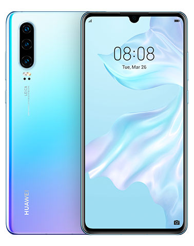

Venta de Teléfonos
 Huawei P20 son dignas de un gama alta de 2018 que pretende convencer a los usuarios más exigentes, jugando además la baza de un precio algo más contenido de la habitual en los franquicia. El Huawei P20 llega con una pantalla de 5.8 pulgadas a 1080 x 2244 pixels de resolución, procesador Kirin 970 octa-core, 4GB de RAM con 128GB de almacenamiento, cámara principal dual Leica de 12 MP + 20 MP, lector de huellas y Android 8.0 Oreo.
Huawei P20 son dignas de un gama alta de 2018 que pretende convencer a los usuarios más exigentes, jugando además la baza de un precio algo más contenido de la habitual en los franquicia. El Huawei P20 llega con una pantalla de 5.8 pulgadas a 1080 x 2244 pixels de resolución, procesador Kirin 970 octa-core, 4GB de RAM con 128GB de almacenamiento, cámara principal dual Leica de 12 MP + 20 MP, lector de huellas y Android 8.0 Oreo.
 El Huawei P30 cuenta con una pantalla Full HD+ de 6.1 pulgadas con notch en forma de gota de agua y está potenciado por un procesador Kirin 980 de ocho núcleos con 6GB o 8GB de memoria RAM y 128GB de almacenamiento interno. La cámara del Huawei P30 es triple, con lentes Leica de 40MP + 16MP + 8MP con zoom óptico 3x y asistida por inteligencia artificial, mientras que su cámara para selfies es de 32MP. El P30 completa sus características con audio Hi-Fi, batería de 3650 mAh con carga ultra rápida, lector de huellas integrado en pantalla, y resistencia al agua IP53.
 El Huawei P40 representa la cuarta generación de la serie P de Huawei. Con una pantalla OLED Full HD+ de 6.1 pulgadas, el Huawei P40 está potenciado por un procesador Kirin 990 acompañado de 8GB de memoria RAM y 128GB de espacio de almacenamiento expandible vía memorias NM de Huawei. La cámara posterior del Huawei P40 es triple, de 50 MP + 16 MP + 8 MP, incorporando estabilización óptica de imagen y zoom óptico e híbrido. La cámara frontal es de 32 megapixels y el Huawei P40 completa sus características con resistencia al agua IP53, batería de 3800 mAh de carga rápida, lector de huellas bajo la pantalla y corre EMUI 10.1 basado en Android 10 AOSP, es decir, sin los servicios de Google, reemplazando el Play Store por el AppGallery.
El Huawei P40 representa la cuarta generación de la serie P de Huawei. Con una pantalla OLED Full HD+ de 6.1 pulgadas, el Huawei P40 está potenciado por un procesador Kirin 990 acompañado de 8GB de memoria RAM y 128GB de espacio de almacenamiento expandible vía memorias NM de Huawei. La cámara posterior del Huawei P40 es triple, de 50 MP + 16 MP + 8 MP, incorporando estabilización óptica de imagen y zoom óptico e híbrido. La cámara frontal es de 32 megapixels y el Huawei P40 completa sus características con resistencia al agua IP53, batería de 3800 mAh de carga rápida, lector de huellas bajo la pantalla y corre EMUI 10.1 basado en Android 10 AOSP, es decir, sin los servicios de Google, reemplazando el Play Store por el AppGallery.
 El Huawei Y9 (2019) es la renovación del smartphone más poderoso de la serie Y de Huawei para el 2019. Con una pantalla Full HD+ de 6.5 pulgadas, el Huawei Y9 (2019) está potenciado por un procesador Kirin 710 con configuraciones disponibles de 4GB de RAM y 64GB de almacenamiento o bien 6GB de RAM y 64GB de memoria interna. En cuanto a cámaras, posee una cámara dual en su posterior de 16 MP + 2 MP, mientras que para selfies también es dual, de 13 MP + 2 MP. El Huawei Y9 (2019) completa sus características técnicas con una batería de 4000 mAh, lector de huellas, Bluetooth 5.0 y Android 8.1 Oreo con la interfaz EMUI.
El Huawei Y9 (2019) es la renovación del smartphone más poderoso de la serie Y de Huawei para el 2019. Con una pantalla Full HD+ de 6.5 pulgadas, el Huawei Y9 (2019) está potenciado por un procesador Kirin 710 con configuraciones disponibles de 4GB de RAM y 64GB de almacenamiento o bien 6GB de RAM y 64GB de memoria interna. En cuanto a cámaras, posee una cámara dual en su posterior de 16 MP + 2 MP, mientras que para selfies también es dual, de 13 MP + 2 MP. El Huawei Y9 (2019) completa sus características técnicas con una batería de 4000 mAh, lector de huellas, Bluetooth 5.0 y Android 8.1 Oreo con la interfaz EMUI.